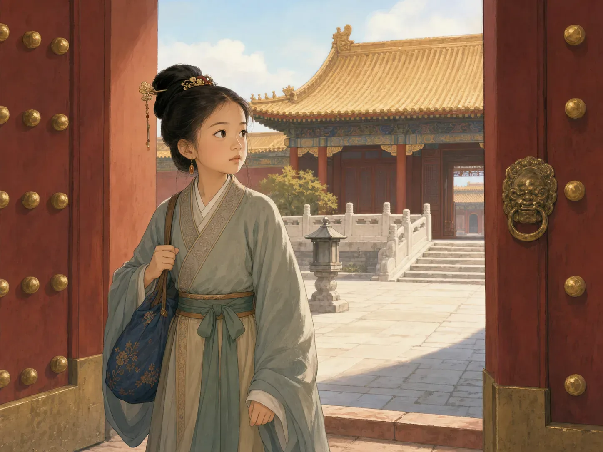
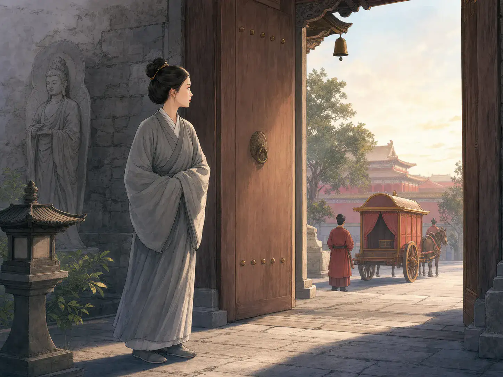
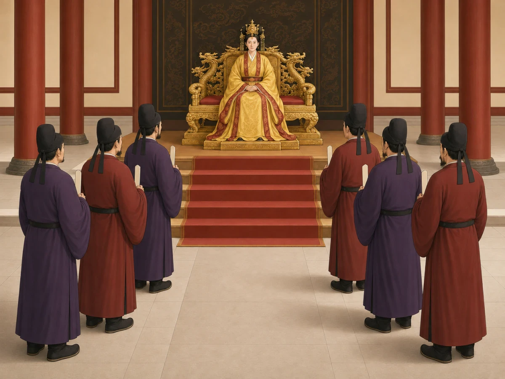

武则天：从宫中少女到皇帝
Wu Zetian: The Girl Who Became Emperor
Page 1
十四岁走进皇宫
Through the Palace Gates at Fourteen

Fourteen-year-old Wu Zetian enters the palace for the first time.
十四岁时，Wǔ Zétiān · 中国历史上唯一正式称帝的女性。走进了皇宫。那时，她还不叫“武则天”，只是许多年轻宫女中的一个。
皇宫又大又漂亮，里面的生活却一点也不简单。谁可以说话，谁必须等待，谁能站得离皇帝近一些，都有严格的规矩。大多数女孩即使在宫里生活一辈子，也很难作出重要的决定。
武则天很会观察，也很会学习。她记住人和事情，慢慢明白宫里谁负责什么，又是谁在作决定。
当时没有人会想到，这个刚进宫的女孩，有一天会坐上最高的位置。
Wǔ Zétiān · 武则天 · The only woman in Chinese history to rule with the formal title of emperor. entered the palace when she was fourteen. She was not called “Wu Zetian” yet. She was simply one young woman among many in the palace.
The palace was huge and beautiful, but life inside was not simple. There were rules about who could speak, who had to wait, and who could stand near the emperor. Most girls could spend their whole lives there without making any important decisions.
Wu watched closely and learned quickly. She remembered people and problems. Little by little, she learned who did what and who made the important decisions.
No one looking at the new girl could have guessed that she would one day sit at the very top.
Page 2
她是怎么回到皇宫的？
How Did She Return?

After spending time at a temple, Wu Zetian returned to the palace.
老皇帝去世以后，那些没有为他生下孩子的宫中女子必须离开皇宫。武则天被送到一座佛教寺院，在那里做了尼姑。按照当时的规矩，她很可能会在那里度过余生。
新皇帝是老皇帝的儿子，他以前在宫里就认识武则天。后来，他到寺院时又见到了她，希望她回宫。新皇帝的妻子王皇后也帮了忙。她本来希望武则天能帮助自己对付宫里另一位很有势力的女子。
事情却没有按照王皇后的计划发展。武则天回宫后越来越受到皇帝重视。公元655年，她取代王皇后，自己成为了皇后。
武则天开始坐在皇帝身边，阅读送到宫里的报告，也参加重要决定。后来，皇帝常常生病，她处理的事情越来越多。
When the old emperor died, the palace women who had not had children with him had to leave. Wu was sent to a Buddhist temple, where she lived as a nun. Under the rules of the time, she might have stayed there for the rest of her life.
The new emperor was the old emperor's son, and he already knew Wu from the palace. When he saw her again during a visit to the temple, he wanted her to return. His wife, Empress Wang, also helped. She hoped Wu would become her ally against another powerful woman at court.
The plan did not work as Empress Wang expected. After Wu returned, she became more and more important to the emperor. In 655, Wu replaced Empress Wang and became the new empress.
Wu now sat beside the emperor, read reports sent to the palace, and joined important discussions. As the emperor became ill more often, Wu took care of more of the government's work.
Page 3
她用了“皇帝”这个称号
She Took the Title of Emperor

Wu Zetian later ruled with the title of emperor.
武则天的丈夫去世以后，她的一个儿子先当了皇帝。不到两个月，武则天就把想要自己作决定的儿子赶下皇位，又让另一个儿子当皇帝。
第二个儿子戴着皇帝的皇冠，可最重要的命令仍然来自武则天。她用儿子的名义统治了六年。
公元690年，武则天让这位儿子也离开皇位，自己正式使用“皇帝”这个称号。她还把王朝的名字改成“周”。为了不和很早以前的Zhōu cháo · 武则天以前一千多年的古代王朝，不是她建立的武周。混淆，后人常把这个时期叫作“Wǔ Zhōu · 武则天称帝后建立的王朝，从公元690年延续到705年。”。
中国历史上有过其他掌握大权的女性，但武则天是唯一正式以“皇帝”身份统治中国的女人。那一年，她大约六十六岁。
After Wu's husband died, one of her sons became emperor. Less than two months later, Wu removed him when he tried to make decisions on his own. She put another son on the throne.
Her second son wore the emperor's crown, but the most important orders still came from Wu. For six years, she ruled in her son's name.
In 690, Wu removed this son too and officially took the title of emperor for herself. She also changed the dynasty's name to Zhou. To distinguish it from the much earlier Zhōu cháo · 周朝 · An ancient dynasty from more than a thousand years before Wu Zetian, not the Wu Zhou dynasty she established., people often call this period Wǔ Zhōu · 武周 · The dynasty Wu Zetian established and ruled from 690 to 705..
Other women in Chinese history held great power, but Wu was the only woman who formally ruled China with the title of emperor. She was about sixty-six years old.
Page 4
皇宫外的四只箱子
Four Boxes Outside the Palace
武则天想找到有本领的人。她让更多人参加选拔官员的考试，也允许人们推荐自己。这样，一些没有有权势亲友的人，也得到了为朝廷工作的机会。
她还在皇宫外放了四只专门收信的铜箱。每只箱子上都有投信的口，普通人可以放进建议、抱怨，或者举报坏事的信。在那个年代，普通人很难把话直接送到皇帝面前，所以这是一种很不寻常的办法。
有些信帮助武则天发现了人才和问题，另一些信却指控有人想反对她。武则天设立了专门查案的人，其中一些人会用威胁和酷刑逼人认罪。有些指控并不是真的，却仍然有人被关进监牢、流放到远方，甚至被杀死。
同样的四只箱子，既能送进一个好主意，也能送进一个害人的谎话。
Wu wanted to find people with talent. She allowed more people to take the tests used to choose officials, and she let people recommend themselves. This gave some people without powerful relatives a chance to work for the government.
Wu also placed four special boxes outside the palace to collect letters. Each one had a slot where ordinary people could leave ideas, complaints, or reports of wrongdoing. At that time, it was very unusual for an ordinary person to send a message straight to the ruler.
Some letters helped Wu find talented people or learn about real problems. Others accused people of plotting against her. Wu created a special group to investigate. Some investigators used threats and torture to force people to confess. Not every accusation was true, but people were still imprisoned, sent far away, or killed.
The same four boxes could carry a useful idea—or a dangerous lie.
Page 5
没有刻字的石碑
The Stone with No Words
武则天当了十五年皇帝。公元705年，她年老又生病，宫里的一群人逼她离开皇位。几十年前被她赶下皇位的那个儿子，又重新当上了皇帝。武则天在同一年去世，后来和丈夫葬在一起。
他们的墓旁立着一块高大的石碑。这样的石碑通常会刻上赞美墓主人一生的文字，可武则天的石碑最初什么也没有写，所以人们叫它“无字碑”。后来，别人在上面刻了一些字。
武则天为什么留下一块没有刻字的石碑？没有人确切知道。她也没有留下一个可以证明的答案。
这块石碑一直站在那里。有人看见一位聪明、勇敢的统治者，也有人想起她惩罚过的人。武则天的一生里，这两件事都真实存在。
Wu ruled as emperor for fifteen years. In 705, when she was old and ill, a group inside the palace forced her to leave the throne. The son she had removed many years earlier became emperor again. Wu died later that year and was buried beside her husband.
Near their tomb stands a tall stone monument. Stones like this usually carried words praising the person who had died. Wu's stone had no writing at first, so people called it the “Stone with No Words.” Other people carved words on it later.
Why did Wu leave the stone without words? No one knows for certain. She left no answer that can be proved.
The stone still stands. Some visitors think of a smart and daring ruler. Others remember the people she punished. Both belong to the history of Wu Zetian.
人们为什么还记得她
Why Is She Still Remembered?
再想一想那个十四岁走进皇宫的女孩。当时几乎没有人相信，一个女人能够成为皇帝。几十年后，武则天证明他们错了。
可是，坐上皇位并不会让一个人的每个决定都变成正确。武则天给一些有本领的人新的机会，也用严厉的办法除掉反对她的人。
一千三百多年以后，武则天仍然是中国历史上唯一的女皇帝。她证明女人也能统治一个帝国。她的一生也留下一个提醒：登上皇位，和正确地使用权力，是两件不同的事。
Think again of the fourteen-year-old girl entering the palace. Almost no one believed that a woman could become emperor. Many years later, Wu proved them wrong.
But sitting on the throne did not make every choice she made right. Wu gave new chances to some people with talent. She also used cruel methods to remove people who stood against her.
More than thirteen hundred years later, Wu is still the only woman emperor in Chinese history. She proved that a woman could rule an empire. Her life also left a warning: winning the throne and using its power wisely are not the same thing.